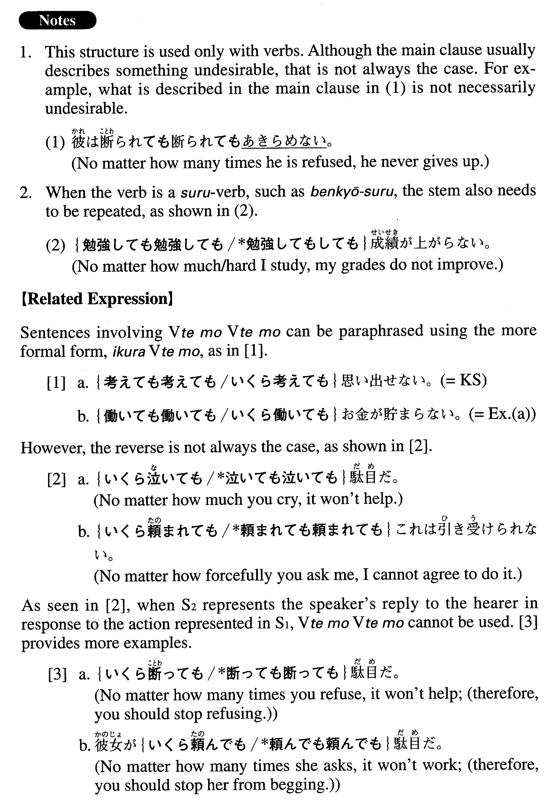

←
DoJG
→
～ても～ても
(A. 603)
Example sentences
(ks).
考え
ても
考え
ても
思い出せない。
No matter how much/hard I try (literally: think), I cannot remember it.
(a).
働い
ても
働い
ても
お金が貯まらない。
No matter how much/hard I work, I cannot save money.
(b).
掘っ
ても
掘っ
ても
水は出てこなかった。
No matter how much/deep I dug, I didn't hit water.
(c).
歩い
ても
歩い
ても
町が見えてこない。
No matter how far I walk, I can't see (the next) town.
(d).
練習し
ても
練習し
ても
ゴルフがうまくならない。
No matter how hard I practice, my golf does not improve.
(e).
暑い上に湿度が高いので、拭っ
ても
拭っ
ても
汗が吹き出してくる。
Because it's hot and humid (literally: it is humid on top of being hot), I sweat no matter how many times/much I wipe (my face).
(f).
このクラスの学生は教え
ても
教え
ても
覚えないので、教えがいがない。
Because the students in this class never learn no matter how many times I teach them (the same things), I feel like it's not worth teaching them.
Formation
V1
ても
V2
ても
Where V1=V2
飲ん
でも
飲ん
でも
No matter how much I drink
